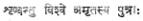
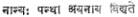

REVIEWS
Changing the
Curriculam: edited by John F. Kern. University of London
Press: 13s. 6d.
It
is unfortunate that education at every level has become the guinea pig of
experimentation. It is the plaything of politicians narrow-minded chauvinists.
Patriotism is the last refuge of every illiterate or ill-educated reformer. The
love of ones country is measured by the abuse of a particular language which is
the window on the western world.
Five
British Professors of Education formulate the basic theory of curriculum change
and renewal. We should take care to see that the light that guides us is
not an ignis fatuus. Kenneth Charlton, for instance, points out that
educational theory at the day is moving towards synthesis which may modify our
theory of knowledge which in turn may modify our curriculum and curriculum
theory (p. 76). It is the influence of the psychology of child development,
states Taylor, that makes the concept of readiness in the language of teachers
(p. 80). Frank Musgrove writes the work
of evaluating curricula from the point of view of social objectives has
scarcely begun (p. 109). Paul Hirst suggests that it is quite impossible to
learn facts, to know them as facts without acquiring the basic concepts and the
criteria for truth involved (p. 45). Prof. Kerr informs us that the really
important questions in curriculum discussion are not syllabuses and methods of
teaching but objectives. The curriculum is a tetrahedron with a component at
each vertex–curriculum objectives, knowledge, learning experiences and
curriculum evaluation. Further, how are we to resolve the dichotomy between
theory and practice, between teacher-training and the actual job of teaching
children?
I
have referred to a pentagon of views to give the reader an idea of the riches
of the book. Any one interested in educational theory should make this book
ones friend and philosopher. History and philosophy, Psychology and Sociology
throw light on the strategy of curriculum planning though it is dangerous to
rely on the findings of individual disciplines. It is said that Aristotle puts
the right questions whether he gives the right answers or not. Changing the
Curriculum makes change or reform in education more rational and less
erratic. A sentence of Coleridge, says Virginia Woolf, explodes in the mind.
This book merits similar praise; it explodes in the mind. It is the road to the
Xanadu of the complex process of curriculum change. The book does not need a
reviewer’s puffery. It shows the many gaps in our thinking about education. It
eliminates the idea that education is education as pudding is pudding and the
best thing is to swallow it. It induces the play of criticism in this field
which, according to Arnold, should precede any creative effort. The book
supplies a set of constructs. Reform can be rationally designed and consciously
willed.
In
these days when curriculum builders swear by science-based curriculum, it is
relevant to know that the ultimate purpose of education is, in the words of
Rantock, ‘a clarification of the world of nature, of the world of man, and of
the internal world of sensation and reflection, of emotion and cognition.’ (p.
21)
–PROF. K.
VISWANATHAM
The Epic of Saivism: by
Yogi Suddhananda Bharati. Saiva Siddhanta Publishing House, Broadway, Madras–1.
Price: Rs. 5.
It
is the pride of South India that it has had in the past a great line of saints
and devotees of the Lord, who by their sheer strength of faith and
God-experience, were able to pour out in strains of Tamil song the glory of the
Almighty. If the devotees of Vishnu were called Aalwaars, the dedicated souls
of Siva were named as Naayanaars. If the outpourings of the Vaishnava singers
were termed Divya Prabandams, those of the Saivites went by the name of
Devaarams. Almost as contemporaries were these living in the land and one can
only wonder at the purity and plenty of their hearts’
searchings towards God.
Towards
the middle of the twelfth century after Chirst, during the reign of Anapaaya
(Kulottunga II) Chola, a God-intoxicated person, called Sekkizhar, strove to
narrate the eventful lives of the Naayanaars in verses, which correspond in
form to the Devaarams themselves. In seventy cantos he collected in his own
words, the lives of the famous saints who with unswerving zeal and steadfastness,
fulfilled themselves with God’s grace in order to sing His praises without any
interruption. The result was a magnum opus of nearly 4,286 stanzas of
unalloyed dedication of the spirit to the knower of human destiny. Periya
Puraanam was the title under which this book of hagiology got released to the
world and has proved a standing source of influence to the religion of the
followers of Siva.
The most famous of the Naayanaars like Appar, Sambandar and Sundarar who have been responsible for the major contents of the book of Devaarams were the heroes of legends which when read, can make the least religious among us, stirred to our depths. Miracles and wonder-works have given life to these episodes that are recited with fervour and piety still in every temple of accredited antiquity in South India. An attempt to make these ancient soul- stirring stories available to readers of other languages is a laudable one, and everyone will feel indebted to Yogi Suddhananda Bharati for his English version of the contents of the Peria Puraanam. He has not exactly translated the Tamil verses of Sekkizhar’s book, but has in a summary manner given in English the matter contained in them. Apart from his English narration of the lives of the Naayanaars, he has in his short introduction dwelt upon the characteristics of the Saiva saints and has drawn their comparisons with some of the western saints of the middle ages in their earnestness for a dedicated life of devotion.
The
Saiva Siddhanta Works Publishing Society has done well in trying to acquaint
people of other countries with the remarkable achievements in spiritual
experience of some of our saints, by bringing out an English version of the
(12th Tirumurai) Holy book. Dr. V. A. Devasenapati has added his Foreword to the
volume which is sure to attract the notice of all readers of a devotional bent
of mind.
–K.
CRANDRASEKHARAN
Perspectives in
American Literature: edited by Jagdish Chander. Lyall Book
Depot, Ludhiana. 411 pages. Price: Rs. 12-50.
Seven Modern American
Novelists, An Introduction: edited by William Van
O’connor. Popular Prakashan, Bombay. 302 Pages. Price: Rs. 8-00
The
two books on American literature selected here for review are issued by Indian
presses but are sufficiently contrasting in themselves in respect of
presentation, approach, depth and academic standards aimed at. By contrast, the
Indian approach appears be juvenilee. As the title suggests, the first book is
intended to serve as outlines of American studies by Indian writers. Almost all
the useful topics for Indian students offering American literature for their
Honours or post-graduate courses in Indian universities have been scrupulously
selected and dealt with. These essays were written by the students
and teachers of various Indian universities, predominantly of the north, for
the express purpose of participating in a seminar held at
Simla in 1967 under the auspices of U. S. E. F. I.
Of
late, there has been a spate of books which are the outcome of various American
Literature Seminars being organised all the country over. Most of the writers
of such seminar papers never reveal their potentialities of rising beyond the
level of post-graduate students of Indian universities, and since American
literature studies in this country are monopolised by few eminent figures,
anything written by them is thus good for being printed. The obvious advantage
of publishing such seminar papers is that it makes room for
budding critical talent but the accompanying disadvantage is that no serious
thought is given to improving standards. It is not possible to expect a high
academic or research standard from these papers and perhaps that is not the
intention either. That even in such a hybrid collection there would be
exceptions is not quite surprising.
The
other book, as is already suggested, serves as a striking contrast to the
preceding one. The writers discussed here–all modern novelists and most of them
of well-established reputations–are Thomas Wolfe, Edith Wharton, Sinclair
Lewis, Nathaniel West, Scott Fitzgerald, William Faulkner and Ernest Hemingway.
The essays are in the form of critical introductions by university professors
and critics in America. The papers compiled here were published originally as
separate pamphlets by Minnesota University on American writers. All the essays
present refreshingly the viewpoints of these novelists in the context of the
developing American culture. The analysis of individual novels, though quite
often not detailed, are sufficient to be striking and to suggest the novelty of
vision that each writer works out. The bibliographies appended towards the end
of the book seem to have been assiduously prepared and are so carefully
selective as to prove useful guides to the exploring students. Apart from the
index given at the end, the editor has added an introduction also wherein he
explicates his own views about the craft of fiction and the world-view which
inheres each work of fiction. The so-called modernity may lie only
in the ‘technique’ or the ‘Point-of-view’ which may prove only a superficial
veneer, for ‘the great novelists have always known how to tell a story.’
Eliot’s concept of modernity comes easy in such contexts and the editor has not
failed to relate it convincingly to his readers vis-a-vis the art of
fiction.
–D.
C. AGRAWALA
Poetry and Truth, a
Philosophical essay on modern poetry: by Abu Sayeed Ayyub,
Jadhavpur University, Calcutta. (1970) Pp. xii +163. Price: Rs. 10; $ 3; 20sh.
Abu
Sayeed Ayyub, the author of the book under review, needs no introduction; he is
quite a familiar figure on the Indian intellectual scene as the
author of a few books and also as a former editor of the quarterly Quest
(till 1968). Poetry and Truth is a revised and enlarged collection of
Hirendranath Dutta Memorial Lectures delivered by Ayyub at Jadhavpur University
during March-April 1968 and the university authorities deserve all credit for
bringing out the lectures in a book-form.
As
its subtitle (“a philosophical essay on modern poetry”) indicates, the book is
a study of the relation between poetry and truth against the backdrop of modern
poetic theory and achievement. The present study is remarkable more for the
author’s dissatisfaction and disagreement with certain positions of the modern
poets and literary theorists than for any uncritical endorsement, as is the
habit some critics and writers, of all that is modern. The author’s quarrel
with modern poetic theory and practice is essentially directed against what he
singles out as its two major aberrations: abstractionism or an excessive
preoccupation with words at the Cost of meaning, an “overwhelming consciousness
of evil,” a phrase Lionel Trilling used sometime ago to characterise the bulk
of modern literature. Ayyub is cautious enough to qualify his indictment with
the remark that not all modern literature is abstract or charged with an over-whelming
consciousness of evil but “much is and a great deal more shows one or both
these trends.” He singles out Baudelaire, Valery and Mallarme as the major
exponents of these aberrations and feels an uncritical acceptance of their
leadership by the early poets produced results not altogether happy. The
exceptions, he notes, are: Hopkins and Frost, Yeats and Tagore, in their last
phase, Eliot of Four Quartets and
Rilke of Duine Elegies.
With a sense of relevance that goes
with a perceptive critical awareness, Ayyub does well to concentrate in the
first chapter on the major tenets of modern literary theory–of Valery in
particular whose theory is contrasted with that of the Indian aesthetician
Kuntaka. Kuntaka’s definition of poetry, Ayyub points out, as “the togetherness
of the mutually challenging excellences of word and meaning” comes very close
to Paul Valery’s idea of a tension between sound and sense in poetry. The
comparison serves mostly to clarify Valery’s concept of words and the ‘poetic
state’. Ayyub goes on to point out how the attempts to make poetry ‘pure’ art,
either by making in approximate to the condition of music or the state of
painting–the pet analogies of the late nineteenth century French poets–have
only resulted in structures of words emptied of meaning. An upshot of all this
has been an abstract poetry which Ayyub defines as “a structure of words which
gives us the experience of being looked at
instead of being looked through.” (p. 17).
Ayyub’s case against some aspects of
modern literature comes out forcefully in his repudiation of the very
philosophical premises of the school of the absurd: “...the doctrinaires of the
absurd are professed atheists yet naively expect like good Christians to see
the hand of God of love and mercy in everything. It is right to look for a
moral order in a God-governed universe; and it is proper to be prepared for a
lot of evil where physical and biological laws prevail. It is absurd to deny
God and yet expect to see the world run according to a divine plan.” (p. 156)
In short, the study may be regarded
as a timely and serious protest against so much that is negative in modern
literature. Neither ‘pure’ poetry, nor the inverted-romanticism of the
Baudelairian kind nor even the campaigning against ‘a phantom ruler of the
universe’ (as in the school of the absurd) can make, Ayyub feels, literary
experience meaningful or healthful, unless it is animated by a sense of values.
How much of a “metaphysical black-out” there has been on the modern literary
horizon can only be realised in a comparison with the great tragedies of
Shakespeare in which “the negation of values is never total.” Ayyub’s warning
is not without some point: “if we do not see through the metaphysical black-out
indulged in by many modern writers, then moral blackout cannot be far behind.
But untruth itself is a disvalue, not only a metaphysical but also and even
more a literary disvalue...” The discourse concludes with a plea for avoiding ‘aesthetic
falsity’ and for a normalisation of the old relation between poetry and truth–the
sort of relation in which a sense of the terribleness of truth is not unmixed
with bliss, as in the poetry of Rike or Yeats.
–ALUR JANAKI
RAM
The Simhachalam Temple:
by Dr. K. Sundaram, Department of History and Archaeology,
Andhra University, Waltair. Published by Simhachalam Devasthanam, Simhachalam,
Visakhapatnam District, Andhra Pradesh. Pp. xiv plus 295. Price: Rs. 12.
At the very outset the learned author for his brilliant study
and the publishers, the Devasthanam Committee, have to be congratulated for the
issue of this de luxe volume on the art and archaeology on one of the ancient
historical and spiritual temples of India. Nestling amidst the luscious greens
of the Simhachalam range of hills and the middle portion of the ancient State
of Kalinga the spot continued as an apple of discord among the Chalukya-
Cholas, the northern Gangas, Matsyas of Oddadi, Silavamsa kings of Nandapara,
Chalukyas of Elamanchi, Surabhis of Jantarunadu, Pallavas of Viruktam, Koppula
chiefs, Suryavamsi Gajapathis of Orissa (major powers), and other miscellaneous
royal and made-up royal dynasties, who all vied with one another for political suzereinty
over the strategic region. But they were one and all exemplarily loyal to the
mighty Varaha-Narasimha, the presiding deity of the temple, and did their
utmost not only to renovate but also endow the temple abundantly with maanyams
for the various Bhoga-services to be rendered to the Lord every day and on
special festivals. Even the Muslim Nawabs of Bengal and Oudh were faithful to
this Hindu God and did their best to repair the damage
committed by some of their misguided iconoclastic zeal. (Appen. II and Chap.
VII)
Although the ancientness of the temple as of
Varaha-Narasimha is still clouded in mystery and is not
borne out by any historical records or Puranas like the Skanda and the Matsya,
yet its existence and spiritual glory is definitely evidenced since the time of
the Chalukya Chola Kulotthunga (1009 A. D.) onwards. (Appen. II, Inscriptions)
In this context it should be known that during the reigns of the Ganga kings,
Bhanudeva I, and Narasimha II (1187-1221 A. D.) the temple was extended and
rebuilt into the great artistic heritage that it now is. This is borne out by
the close similarities of the art-motifs between this temple on the one hand
and that of the Konarka temples on the other.
It must similarly be noted that the Moola Vigraha of
Varaha-Narasimha is a peculiar form unknown to many of the ancient silpa
satras.
The book is a masterly study of the
Simhachalam Kshetra. It is analytical, comprehensive in its own scope,
convincing and compelling of the high regard which is its due. It need not be
stressed that it is a paragon of what a history of a spiritual Kshetra should
be divested of all the soppiness of inconsistent and unreasonable mythological
traditions and blind beliefs. It is high time that Kshetra Puranas of this type
be written of ancient religious temple centres like the Varanasi, Srisailam,
Tirupati, Rameswaram, etc. Then only the Indian spiritual glory would
dispassionately be etched on the escutcheon of time and truly.
The learned author needs special
congratulations for the delicious choice of representative illustrations and
supervision over excellent printing of them. It may safely be said that the
architecture and the decorative sculpture of the Simhachalam Temple is a
synthesis of the Gupta, the Pallava and Chalukyan art traditions, though not
quite perfectly representative of their best technique.
–P. SAMA RAO
Gleanings from the
Upanishads: by M. P. Pandit. Published by Dipti Publications,
Sri Aurobindo Asramt Pondicherry–2. Pages 239. Price: Rs. 10.
This is a collection of about 225
important quotations from the major Upanishads which ensconce in themselves the
fruits of the researches of ancient Indian seers in the spiritual realm. The selection
begins with a clarion call  (May all sons of immortality hearken) and
ends with a note of warning  (There is no other path to save). Each quotation
is translated and elucidated clearly to enable the reader to have a clear grasp
of the subject. In the very brief introduction, the author explains the nature
of the Upanishadic texts and their teachings, and rightly points out that the
Upanishads are not mere collections of incoherent and mutually contradicting
statements, but records of seemingly divergent but reconcilable experiments of
ancient Indian seers. In this hand-book of Upanishadic quotations that are of
immense value to thinkers, writers and speakers alike, the author has served
dainty dishes of sweets of Upanishadic nectar in an easily assimilable form,
and it is up to the discriminating readers to enjoy them.
–B. KUTUMBA RAO
Lord Haranath: (Biography)
Vol. I–Adi Leela. Compiled by Sri A.
Rama Krishna Sastri, 3/19–A, Innispeta, Rajahmundry-2. Pages 240.
Price: Rs. 3-50.
Sri A. Rama Krishna Sastri is doing
signal service to the devotees of Lord Haranath by undertaking this
publication, a biography of Lord Haranath in English in three volumes. The compiler has collected the material both
biographical and philosophical from
all available sources, and thus
this biography is not only authentic
but also exhaustive. The first volume under review is divided into
two parts. The importance of Sonamukhi town, the greatness of Lord Gauranga,
who, it is believed, has
incarnated as Haranath, and the pedigree of Lord Haranath are described in the
first and introductory part. The second part deals in detail with Haranath’s
birth, boyhood, education and service. A book to be owned by all devotees of Lord Haranath.
–B.
KUTUMBA RAO
Paasupata Sutram: by
Dr. Haripada Chakroborti. Academic Publishers, 11, Panchanan Ghosh Lane,
Calcutta-9. Price: Rs. 20.
The Paasupata system comes to
be mentioned in the Sarvadarshanasangraha of Madhavacharya in the
section devoted to Saivism. It is ascribed to Lakulisa whose sutras form the
doctrines and base the practices of the sect. This work has been commented upon
by Kaundinya (Gupta Age) in his Panchartha-bhashya. This system is known
as panchartha, of five categories, because it deals with “(i) Karya (effect
which is Mahat and the rest produced from Pradhana according to
the Sankhya school), (ii)
Kaarana (cause, which is
Pasupati alone), (iii) Yoga (Meditlation on Pasupati alone),
(iv) Vidhi (behaviour or
practices), and (v) Dukkhanta (end
of sorrow).” (P. 19) Dr. H. Chakroborti presents here for
first time the full text
of the sutras and the commentary, edited and translated in English. His
conscientious scholarship in handling the difficult material available to him
is to be commended.
In his introductory survey of the
subject the author gives a rapid account of the growth of Saivism in India, its
likely origin, its original
contribution and the elements assimilated from other cults. From the period of
Mohenjodaro, through the Vedas, the Upanishads and the Mahabharata he traces
this line of the religious and spiritual tradition in the Country in its various
movements from Kashmiri Saivism in the
North to Saiva Siddhanta in the
South. Writing
on the Paasupata system itself Dr. Chakroborti notes: “...in the Paasupata
system Pasupati is the ultimate cause, the creator, the helper and
destroyer of the world; and He does these functions out of His nature as a
playful being. He is the eternal ruler (Pati) and Sadya, that is,
naturally powerful. He is beginningless, unborn and eternal (Sadyojata). He
is Pati because He possesses the highest powers which are not the result
of any action but which abide in Him permanently. That is why He creates
whatever He likes and this is His greatness.” (P. 21-22)
Next
on Yoga. Kaundinya says that it is the connecting of the individual soul
with God through the conceptual faculty. (Atmesvarasamyoga Yogah) It
means that the pasu leads himself to Isvara or that it is due to the
reciprocity of action of both God and the individual. Its first requisite is
detachment to worldly things. It is of two kinds–consisting in (i) action, and
(ii) cessation from action. (Kriyalakshanam, Kriyoparamalakshanam -
Kaundinya) The first consists in muttering syllables, formulas and meditation,
etc., and the second consists in mere feeling (Samvid).
Now
Vidhi or behaviour is activity which brings about merit ( dharma).
Yoga can be attained not simply by mere knowledge but by a certain course
of action. Vidhi is of two orders, the principal and the subsidiary; of
these the principal is the direct means of merit, religious exercise known as charya
and the subsidiary one is “purificatory subsequent ablution for putting an
end to the sense of unfitness from begging, living on broken food, etc.” (Pp.
22-23)
What
is the final goal attained by the yogin in this path? Kaundinya says that those
who are liberated by the Sankhya-Yoga process, attain Kaivalya but lose
knowledge of what is self and what is other than self. But the Paasupata yogin
who has thus reached Rudra possesses knowledge, that is, omniscience and being
careful, comes to the end of sorrows through the grace of the Lord (V. 40).
This being with Rudra is his liberation and hence he is no longer dependent on
anybody and he can arrest any future aggression of evil. He shares the supreme
power of God except that of creation and he becomes completely free from all
sorrows of three types. In this stage the Yuktasadhaka should mutter Brahman.
Even in this highest stage he may experience some disturbance but God is the Lord
of all knowledge, the Lord of all beings and the Lord of
even Brahman and the Sadhaka would pray to God Siva for His grace and Siva
would always be with Him. This is the final stage of beatitude when the yogin
will be permanent, free from all sorrows and will relish the eternal
association with Siva. (P. 28)
Special notes in appendices on the
relation of the Paasupata system to other sects in the Saiva religion
make it a highly satisfying and illuminating work.
–M. P. PANDIT
As Above So Below: by
Jossie L. Hughes. Published by Philosophical Library, New York. Pp. 263. Price:
7.95 dollars.
An interesting record of the
author’s experiences in the astral world during the first six years of her
occult life. To those whose subtler faculties are open, it is a self-evident
fact that the universe does not consist of the material world alone but there
are a number of other worlds overtopping the physical. The whole is a system of
a number of planes of existence each acting upon the others. There are certain
fundamental laws of truth that operate everywhere despite the characteristic
processes of the respective planes. Though much of what she describes is too
subjective, conditioned by her upbringing in her faith (Christian), there are
some useful truths which she illustrates in these pages in an engaging manner.
One can always help the departed, by
sending them thoughts of strength, comfort and hope. As long as they are in the
worlds near ours, food offered to them with love does reach them in a subtle
way.
When death is sudden, one does not
realise one is dead. It takes time and help from the spirits or angels of the other
worlds to recover consciousness and proceed to the place of rest.
The nature of life led on earth
determines the nature of one’s existence in the worlds into which one crosses
at death.
In the subtle physical world (the
astral as she calls it) one acts by stresses in consciousness, more or less as
experienced in dream-states.
Prayer generates a force that lasts
as long as the motivating desire continues. The force is strengthened by each
repetition of the prayer.
If one can influence events on earth
by action in the subtler worlds it is also true that by concentration here on
earth one can effect movements in the other worlds. All are interconnected,
interacting.
A useful book for the discriminating
reader.
–M. P. PANDIT
Six Great Modern Short
Novels: Indian Edition. Published by Pearl publications
Private Ltd., Dadabhai Naoroji Road, Bombay-1. Pp. 448. Price Rs. 2-75.
In “The Dead” by James Joyce, Mr.
and Mrs. Gabriel, after having participated in a great annual dance, leave the
place when it snows heavily. They rest in a hotel on their way home, and the
snow reminds Mrs. Gabriel Gretta of her boy friend Michael Furey who used to
wait for her in thick snow and eventually died at the tender age of 17. The
reminiscence oppresses her so much that she fails to respond to her husband’s
amorous approaches. Though at first he resents the intrusion of the dead boy’s
thought, he gradually begins to appreciate the situation and is moved by her
sheer childlike innocence. He too ruminates over the “hosts of the dead.”
The titular hero of “Billy Budd,
Foretopman” by Herman Melville, is young, strong and handsome, and is
Foretopman of H. M. S. “Indomitable.” For some mysterious reason he is disliked
and despised by Claggart, Master-at-Arms and makes a serious allegation against
him. The captain conducts an enquiry and gives a fair chance to both the
accused and the complainant to make their points. Almost like in a Greek
tragedy, Billy Budd, in a fit of fury, gives a single, strong blow to Claggart
which results in his instantaneous death. The captain, for all the affection he
has for Billy Budd and thoroughly convinced that he is innocent, nevertheless
holds court and himself becomes the witness. The guilty man is hanged.
This novel may be short and even
great but how it can be called modern is beyond this reviewer’s comprehension. The
narration is archaic and circumlocutary.
“Noon Wine” by Katherine Anne porter
is a moving story of Mr. Thompson who employs Mr. Helton in his
dairy and is thoroughly satisfied with his work though Helton is inexplicably, even
exasperatingly, stiff and reticent. Mr. Hatch finds Helton and says he was a
lunatic. In trying to take him away by force, he is resisted and accidentally
killed by Thompson. Although acquitted by the court, everybody in his
neighbourhood begins to treat and look at him strangely. Even his own wife and young sons
do not believe his innocence wholly. Frustrated, he commits suicide.
“The
Overcoat,” by Nikoloy Gogol, has earned a handsome tribute from Dostoievsky
that all Russian writers were descended from Gogol’s “Overcoat.” A devoted
copyist in an office acquires a new overcoat after a great deal of trouble and
sacrifice and uses it tenderly and zealously. But, as irony would have it, the
overcoat is stolen from him forcefully and he dies a dejected man, almost
pining away for it. The story is absorbing and has rich humour.
In
“Pilgrim Hawk” Glenway Wescott portrays the picture of a man whose wife not
only keeps a hawk as her pet but dotes on in almost to the point of ignoring
her husband’s wants. The husband naturally gets wild with the bird and attempts
stealthily to get rid of it but in vain–only to aggravate and exacerbate his
wife’s agony and anger.
William
Faulkner, the author of “Bear”, is a Nobel laureate (Literature, 1949). In this
story he describes the growth of a young boy through various experiences.
Although the language is rich and refined there is some kind of wooliness about
the narrations.
In
fine, not all the entries in this collection deserve tile epithet ‘great.’
–K. V. SATYANARAYANA
Best Short Stories of O. Henry. Published by Pearl
Publications Private Ltd., Bombay-1. Pp. 287. Price: Rs. 2.
From
the famous writer’s prodigious literary output, as many as 38 stories are
selected for this volume. O. Henry is the pseudonym of the writer whose real
name was William Sydney Porter. “The Gift of the Magi”, “The Furnished Room”, “An
Unfinished Story” and “The Last Leaf” are among the best and most widely read
of his stories and they are given in the present book also. Not that others are
wanting in some admirable qualify. In fact “The Cop and the Anthem” and “A
Harlem Tragedy”, for example, which are also found in the book, are no less
enchanting and entertaining. Only, the first list of stories have some sort of
a classical value in comparison.
What
a reader of the stories finds is that O. Henry’s outstanding qualities are
brevity, ingenuity of plot and surprise ending. O. Henry uses words like a
master craftsman and a writer of lesser repute and audacity would hesitate to
use the particular words for describing the contexts.
–K. V. SATYANARAYANA
Problems of Linguistic
States in
India: by Dr. Krishna Kodesia. Sterling Publishers, Jullunder. Price:
Rs. 15.
When we remember that according to
the census of 1901, we have 179 languages and 544 dialects in India, the
problem of linguistic states may be stated to have just begun. Mahatma Gandhi
no doubt supported the idea of linguistic states, but what the linguistic
protagonists have done is to lean on him for the eminence of his support and not for the
“Redistribution” that would militate against the organised unity of India “...if
such province began to look upon itself as a separate sovereign unit, India’s
independence will lose its meaning and with it will vanish the freedom of the
various units as well... it would be fatal if it (linguistic distribution) led
to narrow provincialism, mutual bickerings and rivalries. The world outside
does not know us as Gujaratis, Maharashtrians or Tamilians but only as Indians.
We must, therefore, resolutely discourage all fissiparous tendencies and, feel
and behave as Indians.” (Harijan 1-2-1948)
As against these thoughts of
Gandhiji, what has taken place starting with Andhra, in the matter of
linguistic egoism, Dr. Krishna has very objectively brought out in her
treatise. The book is very informative with copious references, and lets out
very candidly what may ultimately result in an India which got independence as
a single unit proving the adage–divided you are weak and united you are
impregnable. The chapter on newly-demanded states is very revealing as to the
narrow parochialism even as the chapter on the problem of linguistic redistribution
predicts the chronic state it may develop to. She has been very painstaking and
through she exhibits an anxiety for the preservation of our national integrity.
If our politicians could change
their parochial outlook and cry halt to this fanaticism, the author would feel
highly gratified. Indeed, her feeling would be, she has earned her reward for having
done a real national service. If, however, the tendency for separatism
continues, she has indicated in unmistakable terms, the dissolution of India
into as many tiny parcels as there are languages and dialects. There cannot be
two yardsticks in this matter.
The volume is well got up and the
print makes reading easy and in effect lightens the otherwise heavy matter. All
politicians will do well to own a copy at least as a reference book. None can have
a grievance against the author, for there is not even an iota of partisanship
in expressing her views.
–R. V. NARAYAN
Kailasam and I: by
M. Sivaram. Published by the Koravanji Karyalaya, Bangalore. Price: Rs. 6.
This is a book of reminiscences on
T. P. Kailasam, the great pioneer of social drama in modern Kannada. The
author, who is a practising doctor and a well-known humorous writer in Kannada,
narrates in the book how he was drawn to Kailasam and many incidents of a
personal nature which bring out the many-sided personality of Kailasam–his
ready wit, his sociability, his conversational powers and his Bohemian life,
etc. Kailasam, the man, is already a legend in the Kannada country and a
respectable amount of literature has grown round him, to which this authentic
record by a devotee, himself a person of wit and humour, is a valuable
oontribution.
–K. S. G.
TELUGU
Andhra
Rasagangaadharamu: translated and with original commentary
by Sri Vedala Thiruvengslacharya. A. P. Sahitya Academy, Hyderabad-4. 259
pages. Price: Rs. 6.
While the value of Sanskrit poetics
as a discipline cannot be underestimated its usefulness to the modern reader
would seem to lie in its study as aesthetics. Among the hundreds of writers on
poetics only a few have shown themselves to have been cognisant of aesthetic
problems as such. The rest stuck to its grammaticological basis and its accent
of Rhetorics. Kuntaka, Ruyyaka, Abhinavagupta, Anandavardhana, Rajasekhara and
Jagannatha certainly brought an
aesthetic approach to bear on their observations and discussions.
Jagannatha Pandita was the last of
the great writers on Sanskrit poetics. A polemical writer with a highly
dialectic approach his work Rasagangaadhara is important for having made
quite a few points which are aesthetically relevant. It defines poetic charm as
the poetic imagination with reference to the of poetic production. Defining a Kaavya
in terms of the word propounding a delectable sense it correlates the idea
of camatkaara with vaicitrya
or vicchitti of the aalamkaarika school thus
completing the description of Viswanatha. Rejecting Viswanatha’s definition of Kaavya based on rasa only it gives a more comprehevsive one. It
distinguishes a literary work of art from music and dance by not accepting asvaada
udbodhakatva and rasa udbodhakatva as bases of its definition. Its
clear perception of the manifestation of self-cognition and rasa as the
two distinct but simultaneous facets of aesthetic experience is in itself very
significant. While Abhinavagupta described aesthetic experience as veeta vighna
prateeti through caarvana, Rasagangaadhara elucidates it as bhagnaavaranaa
cit. Shedding tears in an aesthetic experience is explained as due to the
nature of the experience of particular pleasure and not due to pain.
The work under review, a translation of Rasagangaadhara
into Telugu with a copious original commentary by name ‘Sarvani’ comes from
the seasoned hand of Sri Vedala Thiruvengalacharya whose magnum opus Andhra
Dhvanyaaloka and other works are familiar to the Telugu literateurs. Sri
Acharya’s work is important in two ways. It seeks to correct certain postulates
and ideas found in the commentary of Nagesa Bhatta as also some points made by Gangadhara
Sastry and Madhuranatha Sastry. Secondly it is no easy task to make the
dialectic of the argument in the text clear to the modern reader. The author has
succeeded in making the import of the textual argument as lucid as possible.
One will find a lot of useful material very valuable to the advanced student.
In refuting Nagesa Bhatta and others to establish the intention of Jagannatha,
Sri Acharya’s conduct of the argument is very scintillating no doubt but one
would think suaviter would have sufficied where caustic or sircastic
remarks are made. However, there are two points on which Nagesa Bhatta has come
under fire from the author. Nagesa’s attempt to justify the Sabdaarthanishtata
of Kaavya and his hypothetical observation that it might be possible
to supply a distinguishing quality (vailakshanya) to aesthetic relish (asvaada). A modern
aesthetic contemplator would perhaps argue the points in favour of Nagesa on the
following lines: A literary work of art as an aesthetic object implies poetic
diction for emotive purposes. And poetic diction, in the main, has to be Sabdaanuroopa
artha and arthaanuroopa sabda whose existence has been implicitly
agreed to by aalamkaarikaas. Such word and sense as also the expressed
part (the grammaticological meaning of the poem) and the unexpressed part (such
as rasa and dhvani) act and interact as mutual
complementaries. Since they are not mutually exclusive to the contemplator they
constitute an integral whole. It is in this context that Jagannatha’s eko
nadaaviti vyavahaara seems to go off the mark. Secondly since a literary
work of art uses conventional language as its medium its verifiable truth or
falsehood, sincerity or insincerity continues to influence the affect and saahitya
laabha of the contemplator so long as his antahkarana vrittis are
functioning in the process. This lends a distinguishing quality to asvaada at
least to a major part of it. Or else it would become difficult to account for
individual preferences as between Manu and Vasu charitrams where one will find
all other aesthetic criteria common and equal to both.
The book is certainly a very valuable addition to the
existing literature on the subject, but on the mechanical side it needs a
little editing in as much as the modern reader is accustomed to neat arrangement
of matter, punctuation, indices, etc.
–PROF. SALVA KRISHNAMURTHI
Ritu Suktam: by
Nandula Gopalakrishna Murty, Ramaraopet, Kakinada. Price: Rs. 2-50.
Within the span of one hundred and fifty pages the author
has attempted to show how the poets of Andhra from Nannaya to Viswanatha have
reacted to the cycle of seasons. Nature has always provided a colourful
backdrop to the human drama depicted by poets. During the heydays of the
romantic period in Andhra, poets tried to look at Nature from a subjective
point of view deviating from the beaten track of convention. The author has not
only catalogued the descriptions but also added his own comments upon the
impact of the seasons on the sensitive minds of the poets whose vision can
perceive “a world in a grain of sand and Heaven in a wild flower.” While he has
taken care to refer to the works of minor poets, it is a pity that no mention
has been made of the works of Kavikondala Venkatarao and Jashuva who stand pre-eminent
among our Nature-poets. In their inspired work we find much refreshing originality
of approach and novelty of treatment. The vast panorama of Nature including the
recurring miracle of the changing seasons is exquisitely reflected in the poems
of Jashuva whom no
literary chronicler can afford to miss.
Katha Mandaram: edited
by Utukuri Lakshmikantamma. Published by Andhra Pradesh Sahitya Akademi,
Hyderabad. Price: Rs. 3.
This anthology of twelve short stories written by some of
the leading women-writers is a commendable volume of two hundred
and fifty pages ably edited by Srimati Lakshmikantamma and aptly dedicated to
Dr. B. Gopala Reddi who continues to be a perpetual source of inspiration
to writers. Writers like Saradadevi, Ranganayakamma, Krishnakumari, Bhanumati,
and Sitadevi find representation in this anthology which
illustrates insight into the complex human nature as well as a sure sense of
form attained by the practitioners of the short story which offers emotional
snap-shots of life instead of presenting the panorama of events on a vast
canvas in a leisurely fashion. All the stories in this anthology stir our
hearts by emotional appeal and leave an indelible impress upon the mind, when
we conclude reading with a deep sigh. Though there is variety, there is also an
identity of tone and tenor because the approach is largely sentimental. Touch
of humour, which is the balance wheel of human emotions, would have provided
tragic relief to these serious stories that cause high emotional tension.
–DR. C. N. SASTRI
Mottamodati Kanyaasulkam:
(First edition of “Kanyasulkam”) by Gurazada Appa Rao.
Scholars’ edition. Published by B. Gopala Reddy, Assistant Editor, “Zamin Ryot”,
Nellore, (Andhra Pradesh). Pages 34+72+174. Price: Rs. 5.
Gurazada Appa Rao is considored to
be the Father of the Modern Telugu Literature. He wrote the play “to advance
the cause of social reform and to combat at a popular prejudice that Telugu
language was unsuited to the stage.” It is the first work in the spoken dialect
and has proved to be a great success. Though the drama deals mainly with evils
(like acceptance of bride’s money, child marriage, widow re-marriage, abolition
of prostitution as a social institution) that existed in the contemporary
Indian society in the last century, the manner in which the problems were tackled,
the characters that were moulded out of the dramatic material, their dialogues
and the resultant emotions are of an everlasting appeal. No less a critic than
Dr. C. R. Reddy said that “Kanyaasulkam remains a masterpiece in the
difficult field of social satire.”
Kanyaasulkam is
a modern classic and the publisher deserves the gratitude of the Andhras for
reprinting the first edition (after 72 years!) and for preserving it for
posterity. The introduction and the appendices throw new light and are highly
valuable.
–BHAVARAJU